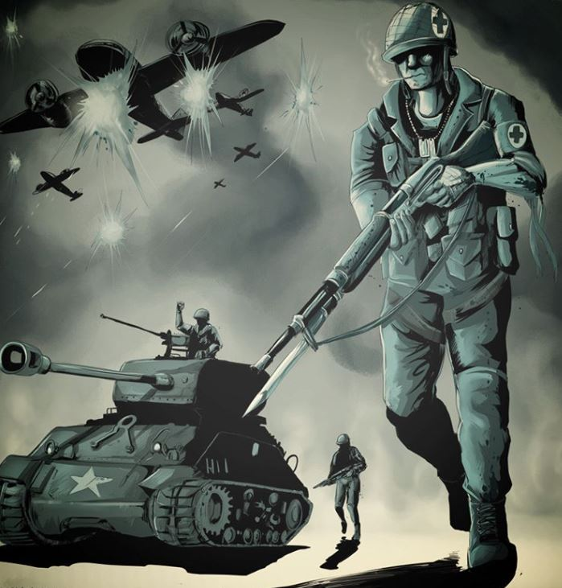

War Time

This digital drawing was created using Illustrator and some Photoshop. I enjoy watching war documentaries so I was inspired in making a comic-like scene showing a soldier and his boys getting ready for war. The soldier is a medic but after seeing what the war has led to, he's forced to join in and fight. This piece took months to complete since I had to get used to Illustrator and Photoshop to perfectly get the scale, layers, and colors perfectly layed-out. Overall, I really enjoyed how the scaling turned out, seeing the medic soldier being the focal point which was my intention. However, the little explosions in the air by the planes seem a bit off since they were difficult to blend in. It sort of looks like a rip on the page which I wanted to fix but had trouble dealing with.
Home